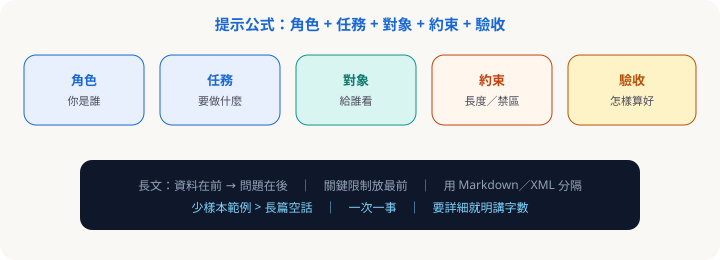

第二章 · 提示詞
寫清楚，比寫長更重要
對齊提示策略：結構化分隔、關鍵限制放最前、長文「資料在前、問題在後」、少樣本、一次一事。
最小公式

- 角色：你是誰（語氣、專業邊界）。
- 任務：要產出什麼。
- 對象：給誰看、什麼場合。
- 約束：字數、禁區、必須／不可。
- 驗收：欄位、格式、檢查項。
可記 PARTS：Persona、Action、Requirements、Target audience、Style／Success。
進階技巧
結構化分隔
用 Markdown 或標籤分開指示與材料。
關鍵限制放最前
角色、安全邊界、輸出格式放開頭。
長上下文：資料在前、問題在後
先貼文件，最後才問「根據以上…」。
少樣本 > 空話
貼理想輸出範例，寫「只學格式」。
一次一事
先大綱→再段落→再縮短。
可複製範例（科普展導賞）
複製用## 角色
你是科學館展場導賞撰稿，用繁中、國中程度。
## 任務
寫約 200 字展品導賞稿，再附 3 個互動提問。
## 對象
家庭觀眾（家長＋孩子）。
## 約束
- 不捏造科學事實；不確定處標「需查證」
- 不用表情符號
## 驗收
正文一段＋「互動提問」編號清單。
示範素材亦可見下載包內 sample 檔；會議紀錄範本見第五章 Skill。
隨堂測驗 · C2Q1
長文件貼進提示時，較佳順序？
隨堂測驗 · C2Q2
想固定輸出格式，最有效做法之一？
隨堂測驗 · C2Q3
「關鍵行為約束」較建議放在？